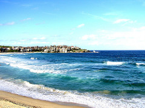

Bondi Beach byALLE
Sydney har många populära stränder. På kusten söder om Harbour Bridge ligger stränder som Bondi Beach, Coogee Beach och Cronulla Beach. På The North Shore ligger bland annat de populära stränderna Manly Beach och Palm Beach.
Argyle Cut
Aboriginal Fine Art Prints
Aboriginal Fine Art Prints är ett konstmuseum över sällsynta grafiska och informativa upplagor. Museet har också de dyraste verk av australiensiska konstnärer.
Acer Arena
Acer Arena är Australiens största inomhus underhållningarena och sportplats med över 2100 sittplatser. Här hålls konserter, is-föreställningar, bilshower m.m.
Anzac-bron
Anzac-bron är en bro som färdigställdes 1996 och knyter samman Pyrmont och Rozelle över Johnston-bukten. Bron är 345 meter lång och är den största kabelbron I Australien, och ger vackra utsikter över staden. Bron har en australiensisk flagga i östra tornet, nyzeeländsk flagga i västra tornet och en bronsstaty föreställande en soldat.
Anzac Memorial
Anzac Memorial är ett minnesmärke i Hyde Park för att hedra australiensiska och nyzeeländska soldater som tjänstgjorde i andra världskriget. I minnesmärket finns en bronsstaty, 120,000 små stjärnor inristade i marmor och en evigt brinnande låga.